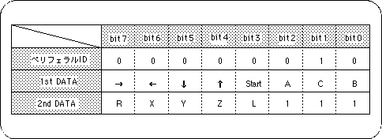

Return to previous page | Return to menu | Go to next page
The input device connected to the input port sends a signal to the Sega Saturn when the device input device (such as direction keys and buttons) is turned on.
In response to this signal, Sega Saturn changes the device bits prepared in the system, and by reading this change, the programmer can read the status of the input device.
Therefore, in this chapter, we will explain the actual operation using the Saturn PAD, which is a typical input device of Sega Saturn.
Devices connected to input ports (such as Saturn PAD) are recognized by the system, and a certain area corresponding to each device is reserved in the system.
This area includes the peripheral ID (8 bits), which is a device type recognition bit string (specific to each device), and the input status bit string that follows it.
The input status bit string is composed of one data string 8 bits, and the necessary data string is prepared for the connected device.
The bit value of the input status bit string remains 1 if there is no input, and changes to 0 only when there is an input (while the key or button is pressed).
Saturn PAD is processed as the following set of bits.

Note) The last 3 bits of 2nd DATA are 1 for convenience because they are not used.
Caution
Refer to “HARDWEAR MANUAL vol.1” for the peripheral data format of input devices other than Saturn PAD.
A bit string representing the status of each device is automatically stored in the area specified by the system.
Peripheral is a general term for all peripheral devices such as I / O. Peripheral ID is an ID for identifying peripheral devices.